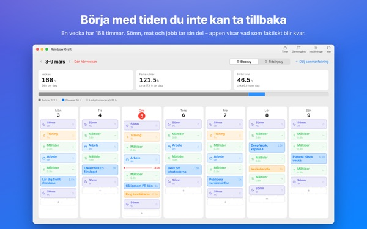
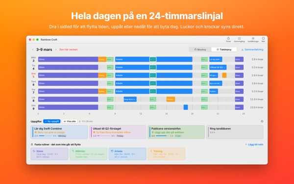
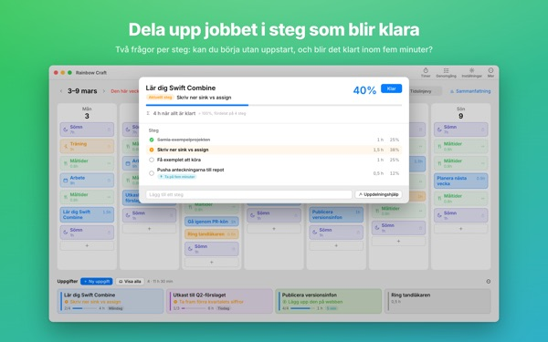
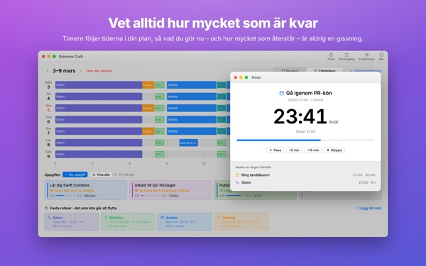
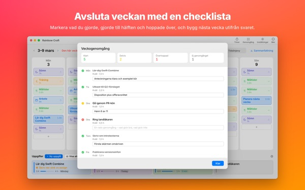

Får allt verkligen
plats den här veckan?
Rainbow Craft lägger ut din vecka dag för dag och timme för timme på Macen. Börja med tiden du inte kan avstå, som sömn, måltider och arbete, dra in uppgifterna i luckorna och se vad som faktiskt får plats.
Planering, rutiner, uppgifter, genomgång, timer och kalenderimport är gratis.

Planera en vecka här
Vi har lagt in de fyra rutiner som appen föreslår första gången du öppnar den. Slå av och på dem och lägg uppgifter på dagarna.
Listan växer. Veckan gör det inte.
En uppgiftslista säger inte om veckan klarar av den. När sömn, mat och pendling har tagit sitt finns mindre kvar än du tror. Rainbow Craft visar de timmarna som siffror och rutor och låter dig prova varje uppgift på en riktig plats.
Se en dag på en 24-timmarslinjal
Tidslinjevyn lägger ut dagen på en linjal över 24 timmar. Luckor och överlapp syns direkt, och du väljer hur överlappande saker ska ligga.
Hämta möten och avtalade tider från Kalender på Macen i stället för att skriva dem två gånger. Om du vill kan planerna också hamna i en separat Rainbow Craft-kalender som du ser på iPhone. Dina andra kalendrar ändras aldrig.

Dela upp stora jobb i steg som blir klara
Stora jobb fastnar när något fortfarande står i vägen. Appen ställer två frågor om varje steg: kan du börja utan uppvärmning? Går det att göra klart på fem minuter?
Det som klarar båda är en bit att ta när fem minuter blir lediga. Resten behöver avsatt tid. Har appen fel bestämmer du.

Vad du håller på med och hur länge till
När starttiden kommer blir planen pågående, och när tiden är slut frågar appen om du blev klar. Timern följer ditt schema.
Widgeten Nu-timer visar vad du gör och hur lång tid som är kvar utan att du öppnar appen.

Avsluta veckan med en checklista
Veckogenomgången är ett kort per dag. Markera vad du gjorde, gjorde till hälften eller hoppade över, och använd det när du planerar nästa vecka.
Med samma iCloud-konto går uppgifterna mellan den här appen och Rainbow of Desire på iPhone, så dagen du planerade på Macen följer med dig ut.

Kom igång i tre steg
- 1
Lägg in de fasta timmarna
Det som återkommer varje vecka, som sömn, måltider och arbete, blir rutiner. Appen fyller inte i något åt dig.
- 2
Skriv dina uppgifter
En per rad under Uppgifter längst ned. När du ska göra dem behöver du inte veta än.
- 3
Dra dem till dagarna
Släppt på en dag blir det en plan. Flyttas datumet? Dra den till en annan dag eller tillbaka till listan.
Räkneexemplet med de föreslagna rutinerna
- En vecka
- 168 timmar
- Sömn · 8 timmar om dagen
- 56 timmar
- Måltider · tre om dagen
- 17,5 timmar
- Arbete · skola · 9 timmar på vardagar
- 45 timmar
- Träning · 1 timme mån, ons, fre
- 3 timmar
- Tid du faktiskt har den här veckan
- 46,5 timmar
Det är bara förslag. Välj och justera rutinerna efter ditt liv. På semester- eller resdagar tar du bara bort arbetet den dagen.
Allt du behöver för att leva den här veckan är gratis
Gratis
- Vecko- och dagsplaner, rutiner och uppgifter utan gräns
- Tidslinjevy och uppdelning i steg
- Veckogenomgång som också kan kopieras som text
- Timer och Nu-timer-widget
- Kalenderimport
- Synk med Rainbow of Desire på iPhone
- Trender för de senaste 2 veckorna
Plus · Pro
- Plus: trender över 8 veckor, dina bästa dagar och tider
- Plus: plan och verklighet sida vid sida
- Plus: lägg in planen från en bra vecka i den här veckan på en gång
- Pro: allt i Plus och dela ditt schema med en skrivskyddad länk
- Pro: ett köp låser upp Pro även i iPhone-appen
Varje nivå som årsprenumeration eller ett engångsköp för alltid
Priserna ser du i appen och på App Store. Årsprenumerationen förnyas automatiskt om du inte säger upp den senast 24 timmar innan perioden slutar. Pro köpt på iPhone gäller också på en Mac med samma iCloud-konto.
Vanliga frågor
Måste jag vara inloggad på iCloud?
Inte om du bara använder den på Macen. Det krävs för att synka med iPhone och dela ditt schema.
Ändrar appen mina kalendrar?
Aldrig dem du redan har. Importen läser bara kalendrarna du väljer. Slår du på att skriva planer till Rainbow Craft-kalendern skapar appen den separata kalendern och skriver bara där. Du kan ta bort den när som helst i appen Kalender.
Uppgifter från Macen syns inte på iPhone.
Kontrollera att båda enheterna använder samma iCloud-konto och att Rainbow of Desire är installerad på iPhone. Synken går via iCloud och kan ta några minuter.
Avslutas appen när jag stänger fönstret?
Nej. Appen fortsätter köras. Öppna fönstret igen från menyn Fönster eller genom att klicka på symbolen i Dock.
Vad händer med mina uppgifter och planer vid en uppdatering?
De blir kvar precis som de är. Uppdateringar ändrar eller raderar aldrig det du har skrivit.
Hur byter jag appens språk?
Välj det högst upp i Inställningar under Language · 언어 · 語言, så öppnas appen igen på det språket. Det finns 23 språk. Rutinnamn och uppgifter som du själv skrivit översätts inte.
Ny Mac och Plus eller Pro är borta.
Logga in med samma Apple-konto och klicka på Återställ köp i Inställningar. Uppsägning gör du i kontoinställningarna i App Store.
Var sparas det jag skriver?
Inget konto, ingen registrering och ingen utvecklarserver med dina planer. Det du skriver stannar på dina enheter och i din egen iCloud. Appen skickar anonym användningsstatistik utan ditt innehåll, och du kan stänga av den i Inställningar under Skicka anonym användningsstatistik.
Kört fast eller ser något konstigt ut? Mejla mizzking75@gmail.com. Det finns också en kontaktpunkt i appens inställningar.